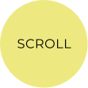
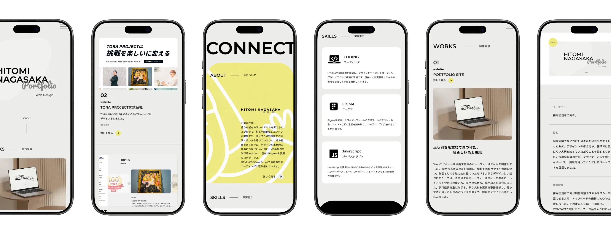

W O R K S
制作実績
01
Website
PORTFOLIO SITE


足し引きを重ねて見つけた、
私らしい色と表現。
Webデザイナーを目指す自身のポートフォリオサイトを制作しました。
採用担当者の視点を意識し、情報を分かりやすく整理しながら、作品としても魅力的に見ていただけるデザインを目指しました。
さまざまなポートフォリオサイトを参考に、レイアウトや余白、文字の見せ方、配色を研究し、試行錯誤を重ねながら取り入れる要素を選んでいきました。自分の雰囲気や人柄が伝わるよう意識し、見やすさと自分らしさのバランスを整えています。


- ターゲット
- 採用担当者の方々。
- 目的
- 制作実績や身につけたスキルを分かりやすく伝えるとともに、デザインへの考え方や、書類では伝わりにくい人柄を知っていただくことを目的としました。採用担当者の方に、デザイナーとして働く姿をイメージしていただき、興味を持っていただけるポートフォリオを目指しました。
- 情報設計
- 採用担当者の方が制作実績やスキルをスムーズに確認できるよう、トップページの最初にWORKSを配置しました。その後にABOUT、SKILLS、CONTACTと続けることで、作品を入り口に人物像や身につけた技術を知り、問い合わせまで迷わず進める構成にしています。さらに興味を持っていただいた方に向けてプロフィールページを設け、これまでの経験や強み、デザインに対する考え方を、より詳しく伝えられるようにしました。
- デザインプロセス
- シンプルで落ち着いた雰囲気をベースに、程よい遊び心を加え、人柄が伝わるデザインを目指しました。アクセントとなる色使いやロゴの見せ方を工夫し、単調になりすぎないよう意識しています。さまざまなサイトを参考にする中で、当初のイメージから離れることもありましたが、必要な要素を選び直しながら試行錯誤を重ねました。少しずつ納得できるデザインへ近づいていく過程にワクワクしながら、デザインの難しさと楽しさを感じ、自分らしい表現へと仕上げました。
- 制作期間
-
企画 / 情報設計 / WF 1週間 デザイン 2週間 コーディング 2週間
- 使用ツール
- Figma / VS Code

O T H E R W O R K S
制作実績


CONTACT
お問い合わせ
ポートフォリオをご覧いただきありがとうございます。
Web制作のご相談やご依頼など、下記メールにお気軽にお問い合わせください。
内容を確認後、2日以内にご返信いたします。